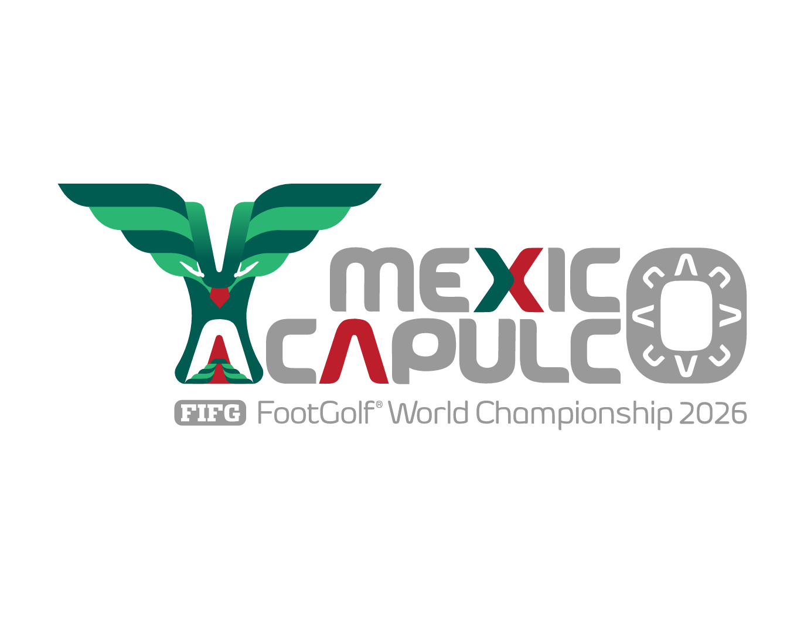

A Estratégia de um Campeão
No Footgolf, o mantra "não é preciso ganhar para vencer" define minha trajetória. Em 2025, provei que a regularidade é tão determinante quanto resultados explosivos. Aos 18 anos, conquistei o topo do Brasil através da consistência, somando 1.320 pontos ao longo do calendário para garantir o título nacional.
Hoje, sigo evoluindo essa base sólida com treinos intensos em Toledo - PR, unindo a experiência tática à busca constante por vitórias e pódios em cada etapa do circuito mundial e nacional.
Rumo à Copa do Mundo 2026
Representar a Seleção Brasileira na Copa do Mundo de Footgolf no México é a realização de um grande objetivo. Ter essa bagagem internacional na América do Sul tem sido fundamental para o planejamento logístico e técnico, buscando sempre o lugar mais alto do pódio neste evento global.
